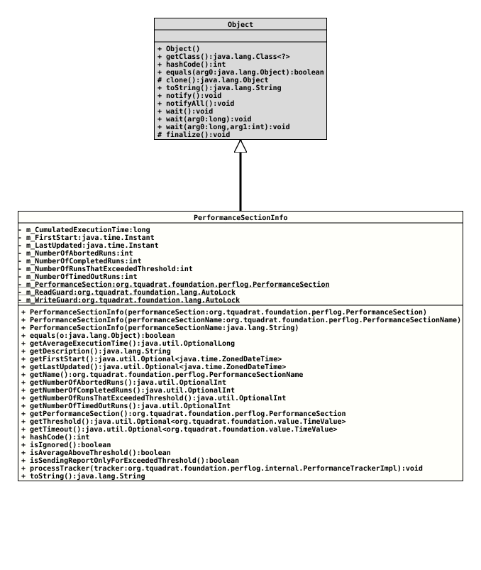

Class PerformanceSectionInfo
Instances of this class holds the execution status for a "Performance Section".
- Author:
- Thomas Thrien (thomas.thrien@tquadrat.org)
- Version:
- $Id: PerformanceSectionInfo.java 1216 2026-05-02 11:16:24Z tquadrat $
- Since:
- 0.25.0
- UML Diagram
-

UML Diagram for "org.tquadrat.foundation.perflog.internal.PerformanceSectionInfo"
{kind=link}
-
Field Summary
FieldsModifier and TypeFieldDescriptionprivate longThe accumulated execution time of the performance section since the last restart of the program, in milliseconds.private InstantThe time when the performance section was first started after the last restart of the program.private InstantThe time when this performance section info was last updated.private intThe number of aborted runs that timed out since the last restart of the program.private intThe number of runs with an elapsed time since the last restart of the program.private intThe number of runs that exceeded the threshold since the last restart of the program.private intThe number of runs that timed out since the last restart of the program.private final PerformanceSectionThe performance section.private final AutoLockThe read guard for the statistics attributes.private final AutoLockThe write guard for the statistics attributes. -
Constructor Summary
ConstructorsConstructorDescriptionPerformanceSectionInfo(String performanceSectionName) Creates a new instance ofPerformanceSectionInfo.PerformanceSectionInfo(PerformanceSection performanceSection) Creates a new instance ofPerformanceSectionInfo.PerformanceSectionInfo(PerformanceSectionName performanceSectionName) Creates a new instance ofPerformanceSectionInfo. -
Method Summary
Modifier and TypeMethodDescriptionfinal booleanfinal OptionalLongReturns the average execution time of the performance section.final StringReturns the description for the performance section.final Optional<ZonedDateTime> Returns the start time for the first execution of the performance section after the last restart of the program.final Optional<ZonedDateTime> Returns the time for the last update of this performance section info instance after the last restart of the program.final PerformanceSectionNamegetName()Returns the name of the performance section.final OptionalIntReturns the number of aborted runs.final OptionalIntReturns the number of completed runs.final OptionalIntReturns the number of completed runs that exceeded the threshold.final OptionalIntReturns the number of runs that timed ot.final PerformanceSectionReturns thePerformanceSectionhold by thisPerformanceSectionInfoinstance.Returns the threshold for the performance section.Returns the timeout for this performance section.final inthashCode()final booleanChecks whether the average execution time is above the threshold for the performance section.final booleanReturns the flag that controls whether the performance section is currently ignored.final booleanReturns the flag that indicates whether reports should be sent only if the threshold was exceeded.final voidprocessTracker(PerformanceTrackerImpl tracker) Processes the given performance tracker.final StringtoString()
-
Field Details
-
m_CumulatedExecutionTime
The accumulated execution time of the performance section since the last restart of the program, in milliseconds.- See Also:
-
m_FirstStart
The time when the performance section was first started after the last restart of the program.
-
m_LastUpdated
The time when this performance section info was last updated. This attribute is used to determine when the report entries for the performance section should be discarded.
-
m_NumberOfAbortedRuns
The number of aborted runs that timed out since the last restart of the program. These are not included in
m_NumberOfCompletedRuns.- See Also:
-
m_NumberOfCompletedRuns
The number of runs with an elapsed time since the last restart of the program.- See Also:
-
m_NumberOfRunsThatExceededThreshold
The number of runs that exceeded the threshold since the last restart of the program. These are included in
m_NumberOfCompletedRuns.- See Also:
-
m_NumberOfTimedOutRuns
The number of runs that timed out since the last restart of the program. These are not included in
m_NumberOfCompletedRunsnor inm_NumberOfAbortedRuns.- See Also:
-
m_PerformanceSection
The performance section. -
m_ReadGuard
The read guard for the statistics attributes. These are:
-
m_WriteGuard
The write guard for the statistics attributes. These are:
-
-
Constructor Details
-
PerformanceSectionInfo
Creates a new instance ofPerformanceSectionInfo.- Parameters:
performanceSection- The performance section.
-
PerformanceSectionInfo
Creates a new instance of
PerformanceSectionInfo.The wrapped
PerformanceSectioninstance will be created on the fly with default values:- Description: empty
- Threshold: disabled
- Timeout: disabled
- Sending Report for Abort: true
- Active: true
- Parameters:
performanceSectionName- The name for a new performance section with default settings.
-
PerformanceSectionInfo
Creates a new instance of
PerformanceSectionInfo.The wrapped
PerformanceSectioninstance will be created on the fly with default values:- Description: empty
- Threshold: disabled
- Timeout: disabled
- Sending Report for Abort: true
- Active: true
- Parameters:
performanceSectionName- The name for a new performance section with default settings.
-
-
Method Details
-
equals
Two instances of
PerformanceSectionInfoare equal if both refer to equalPerformanceSectioninstances. -
getAverageExecutionTime
Returns the average execution time of the performance section.- Returns:
- An instance of
OptionalLongholding the average execution time in milliseconds. Will be empty if no successful execution was recorded so far.
-
getDescription
Returns the description for the performance section.- Returns:
- The description for the performance section.
-
getFirstStart
Returns the start time for the first execution of the performance section after the last restart of the program.- Returns:
- An instance of
Optionalthat holds the first start time.
-
getLastUpdated
Returns the time for the last update of this performance section info instance after the last restart of the program.- Returns:
- An instance of
Optionalthat holds the last update time.
-
getName
Returns the name of the performance section.- Returns:
- The name of the performance section.
-
getNumberOfAbortedRuns
Returns the number of aborted runs. Will be empty if no run was recorded yet.
Runs that timed out are not included in this number.
- Returns:
- An instance of
OptionalIntthat holds the number of aborted runs.
-
getNumberOfCompletedRuns
Returns the number of completed runs. These are the runs that provided an elapsed time. Will be empty if no run was recorded yet.
- Returns:
- An instance of
OptionalIntthat holds the number of completed runs.
-
getNumberOfRunsThatExceededThreshold
Returns the number of completed runs that exceeded the threshold. These runs are also included into the number of completed runs. Will be empty if no run was recorded yet.
- Returns:
- An instance of
OptionalIntthat holds the number of completed runs exceeding the threshold.
-
getNumberOfTimedOutRuns
Returns the number of runs that timed ot. Will be empty if no run was recorded yet.
Runs that were aborted due to other reasons than a timeout are not included in this number.
- Returns:
- An instance of
OptionalIntthat holds the number of timed out runs.
-
getPerformanceSection
Returns thePerformanceSectionhold by thisPerformanceSectionInfoinstance.- Returns:
- The performance section.
-
getThreshold
Returns the threshold for the performance section.- Returns:
- An instance of
OptionalLongthat holds the threshold in milliseconds.
-
getTimeout
Returns the timeout for this performance section.- Returns:
- An instance of
OptionalLongthat holds the timeout in milliseconds.
-
hashCode
Two instances of
PerformanceSectionInfoare equal if both refer to equalPerformanceSectioninstances. -
isIgnored
Returns the flag that controls whether the performance section is currently ignored.- Returns:
trueif the performance section is currently ignored,falseif the performance section is currently observed.
-
isAverageAboveThreshold
Checks whether the average execution time is above the threshold for the performance section. If the threshold is disabled, the method returns
false.- Returns:
trueif the average execution time is above the threshold,falseotherwise.- See Also:
-
isSendingReportOnlyForExceededThreshold
Returns the flag that indicates whether reports should be sent only if the threshold was exceeded.- Returns:
trueif a report should be sent only when the threshold was exceeded,falseif a report should be sent always.
-
processTracker
Processes the given performance tracker.- Parameters:
tracker- The tracker to process.
-
toString
-